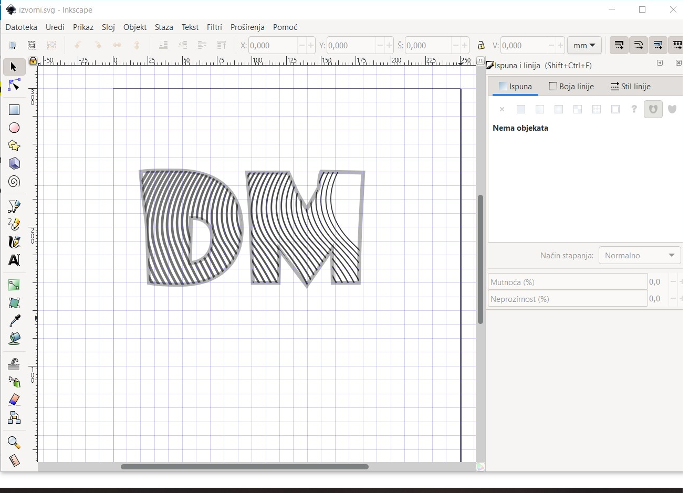
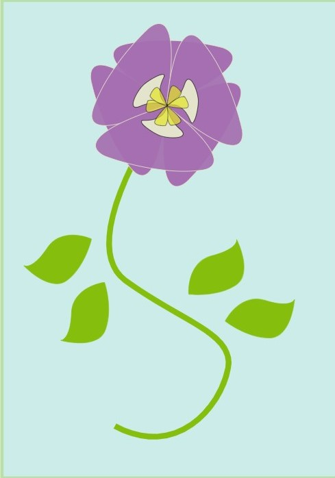
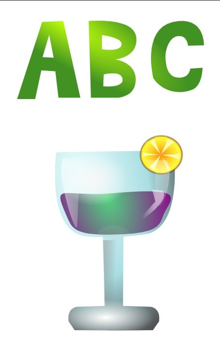
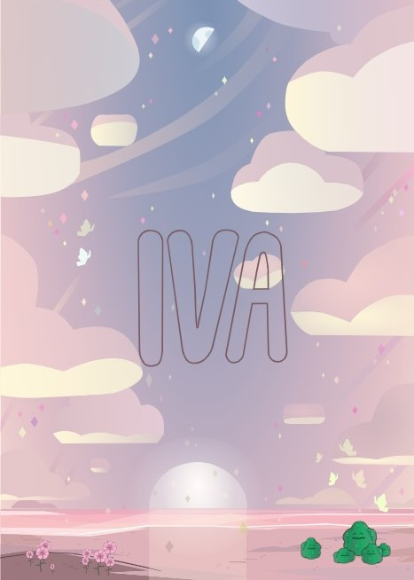
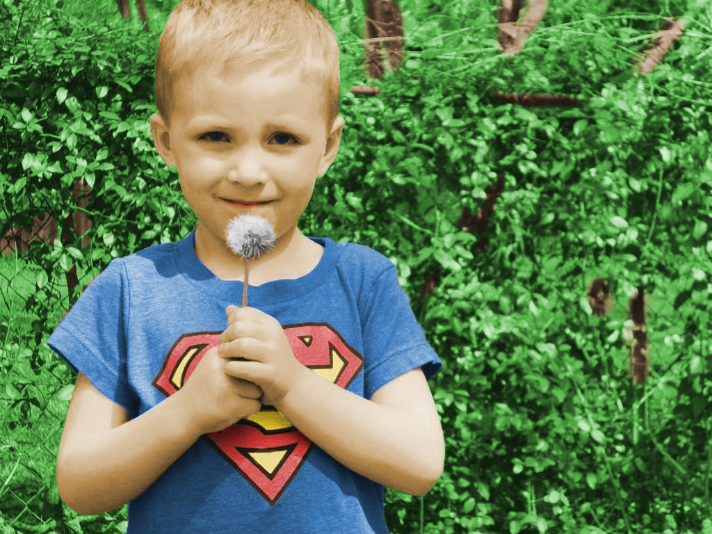
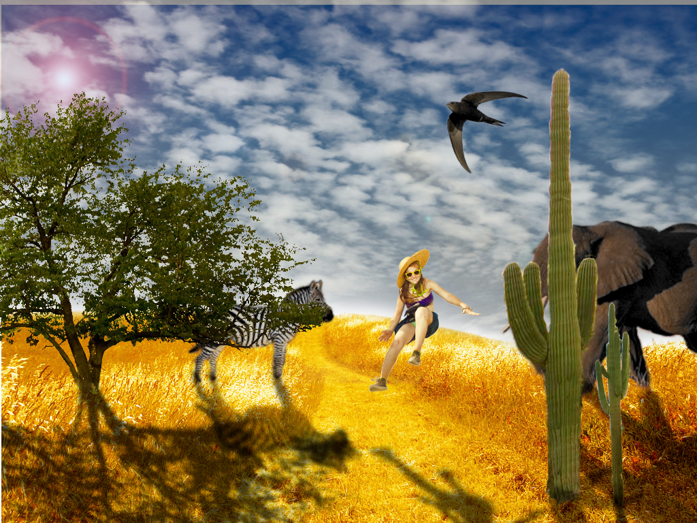
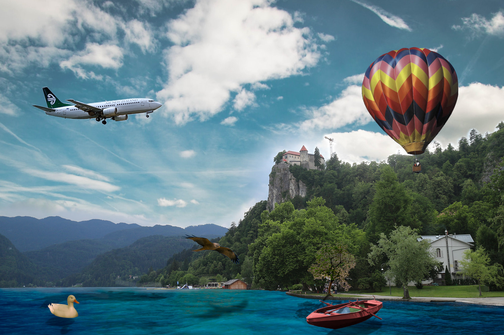

Prva vježba gdje smo se morali baviti fontovima.
Druga vježba gdje smo u InkScape uređivali i igrali se sa fontom.
Treća vježba gdje smo uz krivulje u InkScape nacrtali cvijet
Četvrta vježba gdje smo uz krivulje i gradijente u InkScape nacrtali čašu
Prvi projektni zadatak u Inkscape
Peta vježba gdje smo u GIMP retuširali fotografije
Šesta vježba gdje smo u GIMP mijenjali boju na fotografiji
Sedma vježba gdje smo u GIMP na sliku dodavali različite elemente te im stvarali sjene
Drugi projektni zadatak u GIMP
Osma vježba gdje smo obrađivali video - kinemagraf